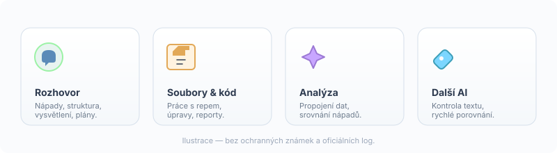
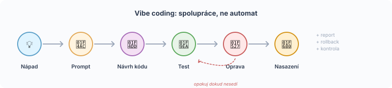
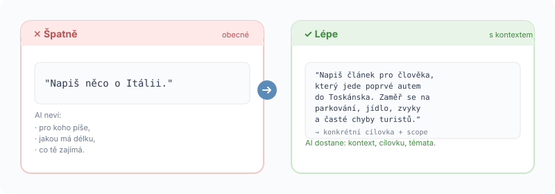
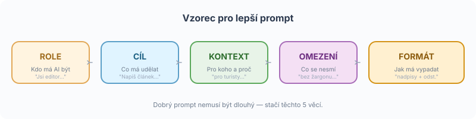
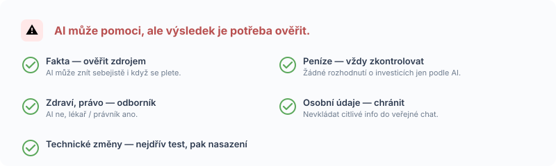
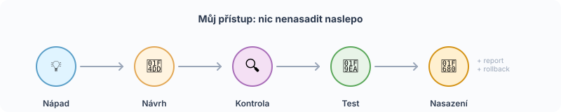

AI nella pratica: come mi aiuta nella vita, nel lavoro e nei progetti
Per me l'AI non è una scatola magica né un sostituto del pensiero.
È un compagno che mi aiuta a scrivere, pianificare, trovare errori, costruire siti web,
gestire la casa intelligente e orientarmi in temi complessi.
Cosa significa l'AI per me
Considero l'AI uno strumento di lavoro intelligente. Una specie di mix tra blocco note,
consulente, correttore, programmatore e quel collega rompiscatole che chiede sempre
"lo dici davvero?" Usata bene, fa risparmiare tempo e aiuta a lavorare in modo più sistematico.
Usata male, produce semplicemente caos in fretta.
Quali AI uso
Nessuno strumento è "il migliore" in assoluto. Ognuno è adatto a cose diverse.

💬 ChatGPT
- idee e struttura dei progetti
- spiegazione di temi complessi
- progettazione di prompt
- testi lunghi
- controllo della logica
📁 Claude / Claude Code
- lavoro con file di progetto
- modifiche al web, codice, refactoring
- report e documentazione
- revisione delle modifiche prima del deploy
✨ Gemini
- integrazione con l'ecosistema Google
- analisi di supporto
- esperimenti per la casa intelligente
- idee vocali / diagnostiche
🛠 Altri strumenti
- codice e controlli rapidi
- confronto di idee
- revisione testi
Uso anche altri strumenti AI di supporto in base al compito specifico.
🗂 Cowork & panoramica mattutina
- scarico automatico delle email 24/7
- ordinamento di fatture e documenti in cartelle
- panoramica mattutina (calendario, email, meteo)
- sync tra notebook, PC e server
- backup e versionamento
AI nel ruolo di supervisore della pipeline — controlla che il flusso dati funzioni e che al mattino sia tutto pronto.
Come uso l'AI
✈ Viaggi
- pianificazione di percorsi in Italia
- testi e didascalie per il web
- idee per i contenuti dei video
- traduzioni e usanze all'estero
💻 Web
- progettazione della struttura delle pagine
- correzioni di testi e idee SEO
- navigazione migliore
- controllo come "visitatore comune"
🏠 Casa intelligente
- progettazione della logica degli scenari
- audit degli script esistenti
- documentazione della pipeline
- pianificazione cauta delle modifiche
L'AI aiuta con il design e i controlli, ma le modifiche vere e proprie devono essere verificate. In una casa intelligente, mai distribuire alla cieca.
📊 Finanza
- ordinamento delle idee
- controllo della logica
- avvisi sui rischi
- panoramica delle registrazioni
Non sono consigli di investimento. Uso l'AI come assistente per la panoramica, non come qualcuno che decide al posto mio sui soldi.
📝 Vita quotidiana
- formulazione di email
- pianificazione della giornata
- spiegazione di cose complesse
- preparazione di testi
Vibe coding: quando descrivo un'idea in modo umano e l'AI mi aiuta col codice
Vibe coding significa che una persona descrive cosa vuole creare e l'AI
aiuta a progettare o scrivere il codice. Non significa accettare ciecamente tutto ciò che
l'AI genera. Nei miei progetti è importante: prima l'idea, poi il design, poi
il controllo, poi il test, e solo poi il deploy.

Non lo vedo come "l'AI fa l'applicazione e io clicco solo". Lo vedo come
collaborazione: io indico la direzione, l'AI propone soluzioni, poi si testa, si corregge
e si controlla la sicurezza. L'AI mi aiuta a convertire un'idea in codice — ma decisioni,
controllo e deploy finale restano a me.
1L'AI mi aiuta a convertire un'idea in codice. Non devo scrivere tutto a mano da zero.
2L'AI sa progettare la struttura. Prima di iniziare è utile vedere come potrebbe essere.
3L'AI sa trovare errori nel codice esistente. Spesso vede ciò che io trascuro.
4L'AI sa creare velocemente una prima versione. Ma è una prima versione, non finale.
5L'uomo deve controllare, testare e decidere. Senza questo, il vibe coding è caos.
6Per cose sensibili (finanza, casa, dati) insisto su un piano di rollback. Se qualcosa si rompe, devo saper tornare indietro.
I miei progetti dove l'AI aiuta
Alcuni esempi concreti dove l'AI funziona nella pratica — e dove sto attento.
🌐 Sito personale live
La pagina che stai guardando ora. L'AI aiuta a tenere in ordine testi e struttura.
- progettazione di struttura e navigazione delle pagine
- testi e titoli SEO
- controllo come "visitatore comune"
- illustrazioni SVG e schede visive
- correzione di errori e tipografia
🏠 Smart Home live
Casa intelligente costruita script-first su una centrale domestica. Qui l'AI svolge soprattutto il ruolo di auditor.
- progettazione della logica degli scenari
- audit degli script esistenti
- documentazione di pipeline e modifiche
- procedura sicura di modifiche con piano di rollback
- test in sandbox prima del deploy
Non vengono pubblicati dettagli interni — tutte le modifiche passano per test in sandbox
e approvazione esplicita prima di toccare la produzione.
📒 Libro contabile / finanza personale strumento proprio
Uno degli esempi è il mio libro contabile personale — uno strumento che
aiuta a mettere insieme estratti bancari, buste paga, panoramiche di investimenti,
assicurazioni e scadenze in una sola vista. L'obiettivo non è sostituire un commercialista
o un consulente fiscale, ma avere più ordine nei dati e vedere in tempo cosa va controllato.
- ordinamento automatico dei documenti dalle email
- dashboard con panoramica giornaliera di entrate e uscite
- investimenti e crypto su più piattaforme
- scadenze e promemoria con semaforo di stato
- semaforo di controllo (riserva, debiti, savings rate)
- demo anonimizzato con dati di esempio
- elaborazione locale — i dati restano da me
Non è un'app bancaria, un software contabile per aziende, un consiglio di investimento
o consulenza fiscale. È uno strumento personale ed esempio di come l'AI può aiutare a
tenere in ordine i dati.
✈ Viaggi e Italia contenuti
Canale YouTube e sezione web sull'Italia. L'AI aiuta con la preparazione dei contenuti, non con dove andare.
- idee di percorsi e luoghi
- testi e didascalie per il web
- preparazione di contenuti video
- traduzioni e consigli pratici
- controllo errori e tipografia
🧰 Le mie app 8 strumenti
Otto applicazioni che mi sono costruito (o che sto costruendo) nell'ultimo anno.
L'AI aiuta dall'idea attraverso architettura, codice, test e documentazione.
Niente nel cloud — tutto gira in locale sul mio computer o su un piccolo server di casa.
- Config Center — pannello web di controllo per smart home (22 sezioni, 100+ variabili)
- Italia Travel Planner — pianificatore viaggi in Italia con avvisi ZTL e modalità camper
- Libro contabile — finanze domestiche su 17 piattaforme + intake automatico fatture da Gmail
- Finance Analyst — segnale proprio compra/tieni/vendi per azioni ed ETF (4 metodi fair value)
- Meal Planner — menu settimanale con obiettivo calorico + lista della spesa
- Energy Dashboard — consumo casa live su PC, badge tariffa NT/VT
- Pannello a muro — kiosk RPi per controllare luci, audio, scene con un pollice
- Lavoro BusLine — parsing turni + confronto busta paga (in sviluppo)
Apri panoramica app →
Nessuna di queste è un prodotto commerciale — sono strumenti personali con screenshot di esempio.
I dati reali sono sfocati o sostituiti con valori di test.
🗂 Cowork & panoramica mattutina routine quotidiana
Un ambiente di lavoro che collega notebook, PC e server domestico. L'obiettivo è avere
ogni mattina una panoramica pronta — cosa è successo durante la notte, cosa c'è in
programma oggi e cosa richiede attenzione. L'AI aiuta a mantenere il flusso dati in
ordine, così la mattina non inizia svuotando una casella piena.
- Scarico automatico delle email ogni ora — il server domestico controlla la casella anche quando il notebook è chiuso
- Ordinamento dei documenti — fatture, estratti e contratti finiscono nelle cartelle giuste senza spostamenti manuali
- Panoramica mattutina — calendario, email elaborate di notte, meteo, status del sistema in un posto solo
- Sync tra dispositivi — lavoro da notebook, PC o tablet senza copiare file via USB
- Backup & versioni — ogni modifica ha cronologia, nulla va perso
Qui non riporto dati email, password o percorsi interni. Tutto gira localmente nella
mia rete e su storage cifrato — l'AI è soprattutto nel ruolo di supervisore della
pipeline, non di lettore di contenuti.
Perché spesso l'AI non funziona per le persone
Non è sempre colpa dell'AI. Di solito è una questione di come le si parla.

1. Chiedono in modo troppo generico
"Scrivimi qualcosa sull'Italia" non porta da nessuna parte. L'AI non sa per chi scrive,
quanto lungo deve essere, né cosa ti interessa. Più la domanda è concreta, migliore è la risposta.
2. Non danno contesto
L'AI non sa chi sei, cosa fai, per chi è il testo e quale dev'essere il risultato.
Poche frasi di contesto risolvono la maggior parte dei problemi.
3. Vogliono il risultato finito senza controllo
L'AI sa aiutare, ma il risultato va letto — soprattutto per finanza, salute, diritto,
tecnica e casa intelligente.
4. Non dicono il formato di output
C'è differenza tra volere una tabella, un articolo, un prompt, una checklist, un piano
o una procedura tecnica. Se non lo dici, l'AI indovina.
5. Non continuano il dialogo
L'AI funziona meglio come conversazione. La prima risposta è spesso solo l'inizio —
la seconda domanda "ora accorcia / concentrati su X / aggiungi esempi" alza notevolmente
la qualità.
6. Credono a tutto
L'AI può suonare sicura anche quando sbaglia. Per questo i fatti vanno verificati —
soprattutto numeri, date, nomi e citazioni.
Come chiedere meglio all'AI
Ho una formula semplice che funziona nel 90% dei casi.

Esempio — web
Sei un editor esperto di siti personali. Aiutami a scrivere una pagina sul viaggio in Italia per lettori comuni. Il testo dev'essere umano, pratico, senza gergo tecnico. Dammi l'output come struttura di titoli, paragrafi e pulsanti CTA.
Esempio — smart home
Sei un architetto senior di smart home. Prima fai un audit, non cambiare nulla senza il mio OK. Trova i rischi, proponi una procedura sicura, prepara il rollback e solo poi consiglia il prossimo passo.
Dove faccio attenzione
L'AI non può garantire la verità. Non vede sempre lo stato attuale del mondo se non ha
accesso ai dati. Non conosce i tuoi file se non glieli dai. Può confondere connessioni.
Per le decisioni importanti serve controllo umano.

!Il vibe coding può creare codice funzionante ma non sicuro. Le prime versioni spesso trascurano edge case e sicurezza.
!L'AI può trascurare una falla di sicurezza. Soprattutto in autenticazione, cifratura e autorizzazioni.
!L'AI può per errore proporre la pubblicazione di dati privati. Token, chiavi, email, percorsi — tutto da controllare prima del commit.
!Per finanza, tasse, salute, diritto ed elettricità serve controllo umano. L'AI è uno strumento, non un esperto responsabile.
!Per il web controllo cosa va pubblicato. Nessun URL interno, nessun token, nessuno screenshot sensibile.
L'errore più grande non è usare l'AI. L'errore più grande è non controllare cosa lascio uscire nel mondo.
Attenzione soprattutto a: finanza · salute · diritto · sicurezza · elettricità · automazione domestica · dati personali.
Esempi pratici di prompt
5 modelli che puoi provare subito.
📝 Per il testo
Riscrivi questo testo in modo che sia comprensibile per un visitatore comune del sito. Mantieni il significato, accorcia le frasi lunghe e proponi un titolo migliore.
✈ Per i viaggi
Preparami un programma di una giornata in Italia per chi vuole vedere posti interessanti ma non vuole correre da un monumento all'altro.
💻 Per il web
Controlla questa pagina come un visitatore comune. Trova punti poco chiari, titoli deboli, CTA deboli e parti che sembrano poco affidabili.
🏠 Per la casa intelligente
Prima fai un audit. Non cambiare nulla. Trova i rischi, le dipendenze e il piano di rollback. Solo poi proponi una procedura sicura.
🔍 Per controllare la risposta dell'AI
Controlla la tua stessa risposta. Scrivi cosa è sicuro, cosa è una stima e cosa va verificato.
Il mio approccio
Uso l'AI gradualmente. Prima l'idea, poi il design, poi il controllo, poi il test. Per le
cose importanti voglio un report, un rollback e una conferma chiara prima che qualcosa
venga deployato. Grazie a questo, l'AI non diventa un caos ma uno strumento che aiuta
a tenere ordine.

Uso questo approccio per casa intelligente, web e finanza. Meno sorprese, più controllo.
L'AI mi aiuta a fare ogni passo più rapidamente, ma le decisioni le faccio sempre io.
L'AI non è solo per programmatori. Può aiutare chiunque voglia scrivere
meglio, pianificare, imparare, trovare errori o mettere ordine nelle informazioni.
L'importante non è conoscere tutti gli strumenti. L'importante è saper chiedere bene.